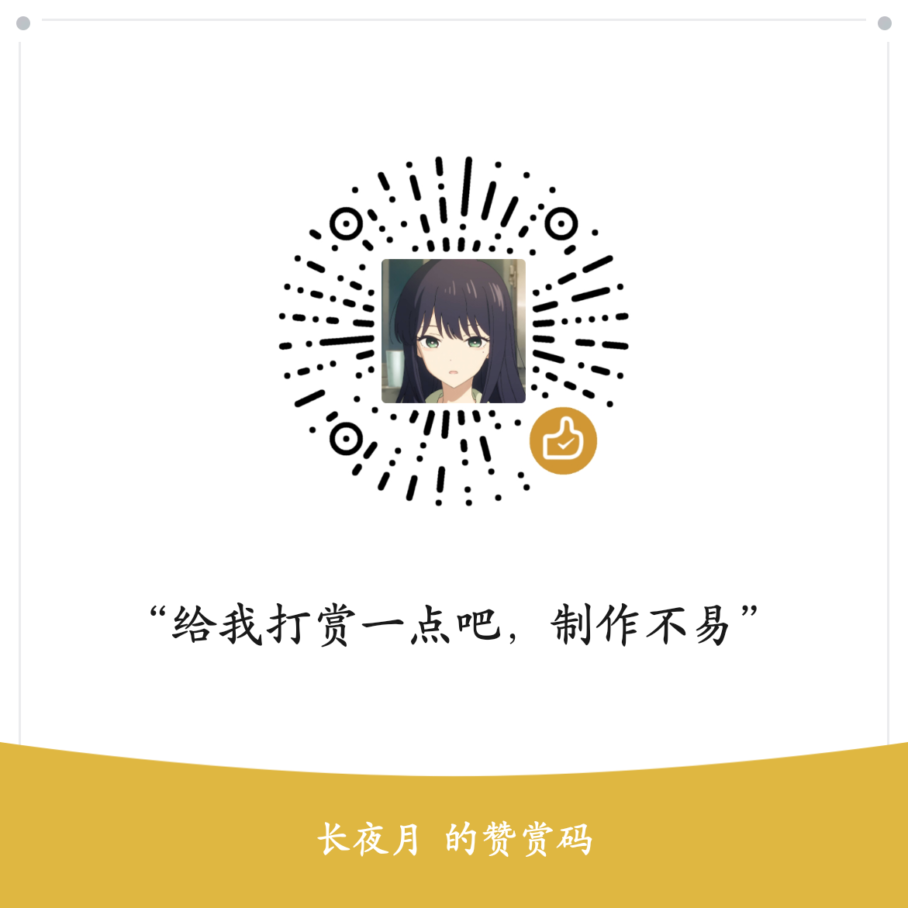

KSA 简体中文汉化 · 2026.10.13.5602
汉化免费使用，欢迎自愿赞赏支持长夜月。首次安装会显示此图片，关闭或点击“继续安装（无需赞赏）”即可继续。

安装只需三步
- 确认游戏版本是 2026.10.13.5602，并正常退出游戏。
- 双击“简体中文启动.cmd”，输入包含 KSA.exe 的游戏安装目录。
- 关闭首次显示的赞赏图片后继续安装。以后用相同入口启动即可。
只安装不启动游戏：双击“仅安装汉化.cmd”。切换英文或还原：使用相应入口。详细说明请查看同目录的 README.md。